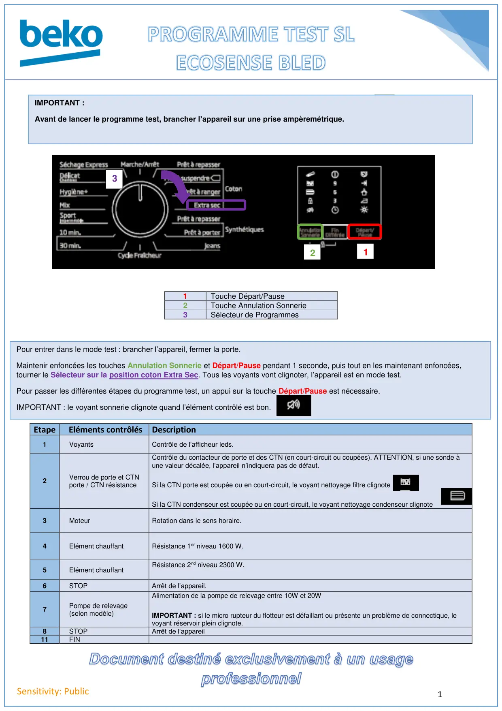
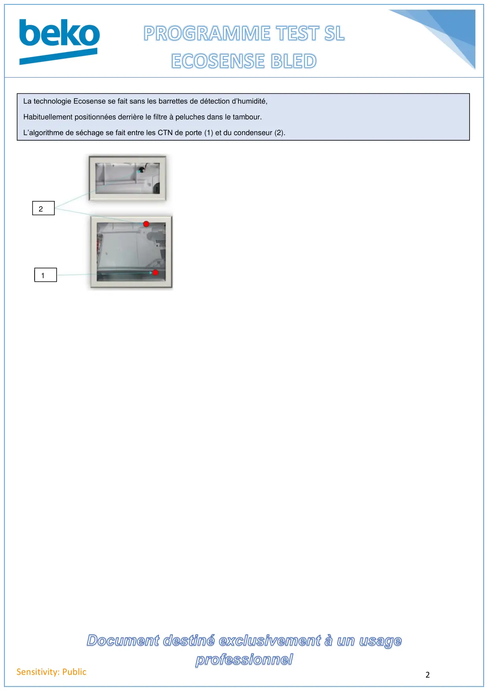

Prog Test Condenseur Ecosense BLED

1Sensitivity: Public1Touche Départ/Pause2Touche Annulation Sonnerie3Sélecteur de ProgrammesEtape Eléments contrôlésDescription1VoyantsContrôle de l’afficheur leds.2Verrou de porte et CTNporte / CTN résistanceContrôle du contacteur de porte et des CTN (en court-circuit ou coupées). ATTENTION, si une sonde àune valeur décalée, l’appareil n’indiquera pas de défaut.Si la CTN porte est coupée ou en court-circuit, le voyant nettoyage filtre clignoteSi la CTN condenseur est coupée ou en court-circuit, le voyant nettoyage condenseur clignote3MoteurRotation dans le sens horaire.4Elément chauffantRésistance 1er niveau 1600 W.5Elément chauffantRésistance 2nd niveau 2300 W.6STOPArrêt de l’appareil.7Pompe de relevage(selon modèle)Alimentation de la pompe de relevage entre 10W et 20WIMPORTANT : si le micro rupteur du flotteur est défaillant ou présente un problème de connectique, levoyant réservoir plein clignote.8STOPArrêt de l’appareil11FINIMPORTANT :Avant de lancer le programme test, brancher l’appareil sur une prise ampèremétrique.123Pour entrer dans le mode test : brancher l’appareil, fermer la porte.Maintenir enfoncées les touches Annulation Sonnerie et Départ/Pause pendant 1 seconde, puis tout en les maintenant enfoncées,tourner le Sélecteur sur la position coton Extra Sec. Tous les voyants vont clignoter, l’appareil est en mode test.Pour passer les différentes étapes du programme test, un appui sur la touche Départ/Pause est nécessaire.IMPORTANT : le voyant sonnerie clignote quand l’élément contrôlé est bon.
1 / 2
2Sensitivity: PublicLa technologie Ecosense se fait sans les barrettes de détection d’humidité,Habituellement positionnées derrière le filtre à peluches dans le tambour.L’algorithme de séchage se fait entre les CTN de porte (1) et du condenseur (2).21
2 / 2